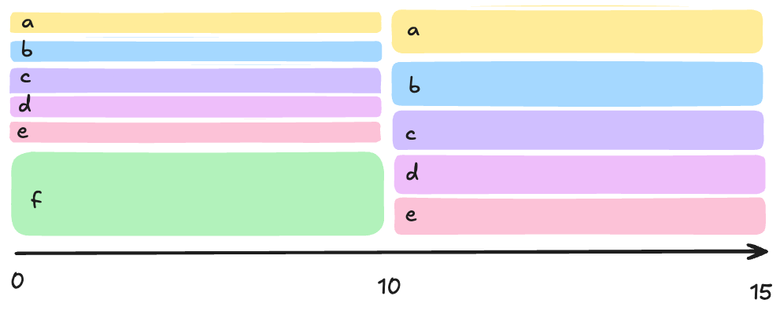
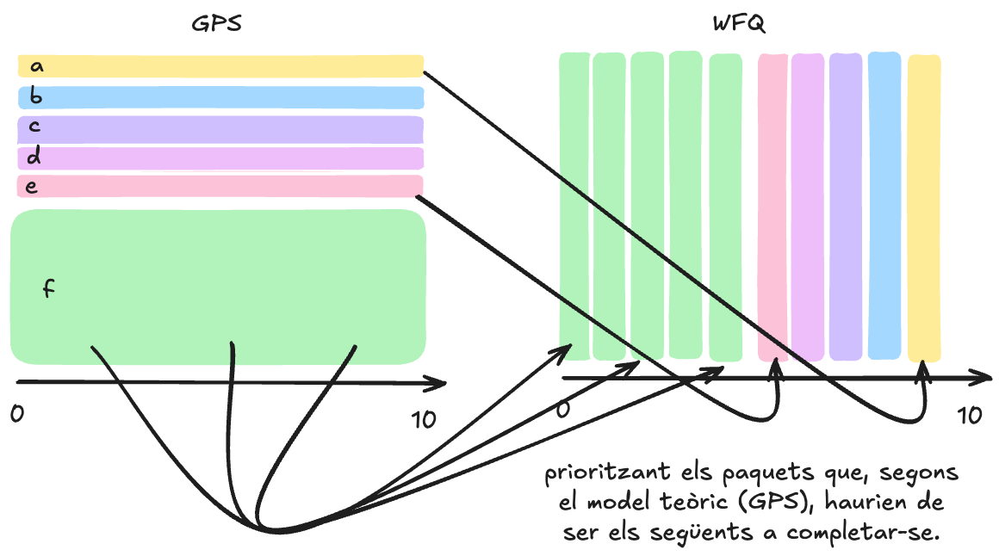
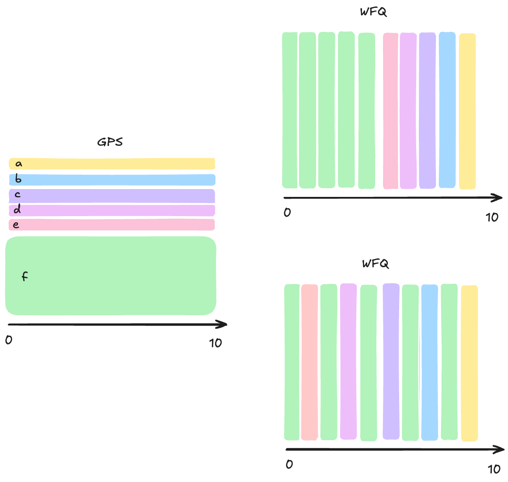

graph LR
C["Capacitat
10 unitats"] -->|5| P1[P₁]
C -->|5| P2[P₂]
style C fill:#f0f0f0,stroke:#444,stroke-width:1px
style P1 fill:#b3d4fc,stroke:#333,stroke-width:1px
style P2 fill:#b3d4fc,stroke:#333,stroke-width:1px
Planificació de processos · Justícia
Unitat 4 · Sistemes Operatius (SO)
Jordi Mateo Fornés
Què és la planificació justa?
Objectiu: Garantir que tots els processos rebin un tracte equitatiu en l’accés a la CPU, independentment de la seva prioritat o ús anterior.
Principis:
- Igualtat de servei: Dos processos idèntics → mateix temps de CPU, mateix rendiment.
- Work-conserving: La CPU mai resta inactiva si hi ha tasques pendents. (no implica justícia, sinó eficiència)
- Justícia: Evita la inanició → cap procés queda sense atenció.
Algorismes que aproximen la planificació justa:
- Fair Sharing, Fair Queueing, Max-Min Fairness, Lottery Scheduling
Exemple 1: Planificació Justa
Quina quantitat de recurs hauria de rebre cada procés per garantir una planificació justa?*
Tenim una capacitat total de recurs:
\[C = 10 \text{ unitats} \]
Dos processos amb demandes diferents:
- P₁ → demanda de 8 unitats
- P₂ → demanda de 6 unitats
Solució justa:
- P₁ = 5 unitats
- P₂ = 5 unitats
Exemple 2: Planificació Justa
Quina quantitat de recurs hauria de rebre cada procés per garantir una planificació justa?*
Tenim una capacitat total de recurs:
\[C = 10 \text{ unitats} \]
Dos processos amb demandes diferents:
- P₁ → demanda de 8 unitats
- P₂ → demanda de 4 unitats
Solució justa:
- P₁ = 6 unitats
- P₂ = 4 unitats
graph LR
C["Capacitat
10 unitats"] -->|6| P1[P₁]
C -->|4| P2[P₂]
style C fill:#f0f0f0,stroke:#444,stroke-width:1px
style P1 fill:#b3d4fc,stroke:#333,stroke-width:1px
style P2 fill:#b3d4fc,stroke:#333,stroke-width:1px
Exemple 3: Planificació Justa
Quina quantitat de recurs hauria de rebre cada procés per garantir una planificació justa?*
Tenim una capacitat total de recurs:
\[C = 10 \text{ unitats} \]
Dos processos amb demandes diferents:
- P₁ → demanda de 8 unitats
- P₂ → demanda de 4 unitats
- P₃ → demanda de 2 unitats
Solució justa:
- P₁ = 4 unitats
- P₂ = 4 unitats
- P₃ = 2 unitats
graph LR
C["Capacitat
10 unitats"] -->|4| P1[P₁]
C -->|4| P2[P₂]
C -->|2| P3[P₃]
style C fill:#f0f0f0,stroke:#444,stroke-width:1px
style P1 fill:#b3d4fc,stroke:#333,stroke-width:1px
style P2 fill:#b3d4fc,stroke:#333,stroke-width:1px
style P3 fill:#b3d4fc,stroke:#333,stroke-width:1px
Max-Min Fairness
L’algorisme de Max-Min Fairness assegura que els recursos es distribueixin de manera que cap procés no rebi més del que necessita fins que tots els processos hagin rebut almenys la seva demanda mínima.
Max-Min Fairness (Algorisme)
C = total_resource_capacity
S = {J1, J2, …, Jn} # conjunt de treballs actius
D = [d1, d2, …, dn] # demanda de cada treball
A = [0]*n # vector d'assignació
while S != ∅:
f = C / |S| # quota justa per a cada treball
b = True
for j in S:
if D[i] < f: # si un treball demana menys del que li toca
b = False
A[i] = D[i] # satisfà la seva demanda
C -= D[i]
S = S \ {j}
if b: # si ningú demana menys
for j in S:
A[i] = f
S = S \ {j}
S = ∅Planificació Justa amb 1 recurs
Si \(n\) tasques han de compartir un recurs (CPU) \(\Rightarrow\) cadascun rep, per defecte, una part de \(\frac{1}{n}\) del recurs.
Extensió: Max-Min Fairness
S’utilitza per ajustar la distribució quan un usuari no vol o no pot fer servir tota la seva quota de recurs.
Exemple: Si la tasca 1 només necessita un 20% del recurs, el recurs restant es redistribueix equitativament entre els altres usuaris.
Extensió: Weighted Max-Min Fairness:
Els pesos determinen la proporció del recurs disponible que correspon a cada procés en cas de competència.
Exemple: Si la tasca 1 té un pes de 1 i la tasca 2 té un pes de 2, la tasca 2 rebrà proporcionalment més recurs respecte a la tasca 1 (2/3 vs 1/3).
Planificació amb algorisme Loteria
- Semblant a Weighted Max-Min Fairness, però amb bitllets en lloc de pesos fixos.
- Cada procés rep un nombre de bitllets segons la seva prioritat.
- La planificació és aleatòria, però proporcional als bitllets.
Funcionament de la planificació Loteria
- Cada procés rep un nombre de bitllets.
- Cada cicle de planificació, es fa un sorteig aleatori.
- El procés que té el bitllet seleccionat obté temps de CPU.
- Els processos amb més bitllets tenen més oportunitats, però cap procés queda exclòs.
Exemple: Planificació Loteria
Procés curts: 10 bitllets - Procés llargs: 1 bitllet.
| Nº curts | Nº llargs | % CPU curts | % CPU llargs |
|---|---|---|---|
| 1 | 1 | 91% | 9% |
| 0 | 2 | - | 50% |
| 2 | 0 | 50% | - |
| 10 | 1 | 99.0% | 0.99% |
| 1 | 10 | 50% | 5% |
\[\text{%CPU} = \frac{\text{nombre de bitllets del procés}}{\text{nombre total de bitllets}} \times 100\]
Warning
Si hi ha massa processos curts, el temps de resposta pot ser molt petit.
- Solució: desconnectar alguns processos o ajustar els bitllets per equilibrar la càrrega.
Cooperativisme amb Loteria (Extensió)
És possible que els processos cooperin per obtenir més bitllets i, per tant, més temps de CPU?
- Un programa client/servidor pot cooperar.
- Si el client ha acabat la seva tasca, pot cedir els seus bitllets al servidor.
- Això augmenta les oportunitats del servidor en els següents sortejos.
Generalized Processor Sharing (GPS)
- Mida dels paquet: 1 bit
- Capacitat de l’enllaç: 10 bits per unitat de temps (velocitat màxima de transmissió)
\[A_i = \frac{P_i}{\sum_{j} P_j} \times C\]
| F | P | A |
|---|---|---|
| f | 5 | 50% |
| e | 1 | 10% |
| d | 1 | 10% |
| c | 1 | 10% |
| b | 1 | 10% |
| a | 1 | 10% |

- P: Pes (bits per unitat de temps) - \(\omega_i\)
- A: Ample de Banda Assignat - \(\rho_i\)
De la Teoria a la Pràctica: GPS i WFQ
Generalized Processor Sharing (GPS) és un model teòric i ideal on l’ample de banda es divideix de forma perfectament contínua (com un fluid) i simultània entre tots els fluxos actius, segons els seus pesos.
Weighted Fair Queuing (WFQ) és un algorisme real i implementable que aproxima el comportament ideal del GPS. A les xarxes, els recursos es transmeten com a paquets discrets (no com a fluids). Per la qual cosa, l’enllaç només pot transmetre un paquet complet a la vegada (no simultàniament).

Limitacions del Temps Real en WFQ
No Apropiatiu: Si un paquet de prioritat alta arriba mentre se’n transmet un altre de baixa prioritat, el segon no pot ser expulsat immediatament. Per mantenir la justícia, el WFQ necessita una mètrica estable i independent de la mida dels paquets que representi el servei ideal rebut (Temps de Finalització Virtual).
Manteniment d’Inactivitat: Si un flux roman inactiu i no envia dades, el temps d’inactivitat no s’ha de comptar com a servei rebut (crèdit guanyat). En reactivar-se, el flux ha de començar el servei sense penalització (amb un ‘comptador’ que s’hagi aturat).
Temps Real (Real Time) no es pot utilitzar directament com a mecanisme de planificació. El WFQ utilitza un Temps de Referència Virtual (Virtual Time) com a reemplaçament del temps real del model GPS.
Virtual Time
El temps de finalització real és inestable i canvia cada vegada que un flux esdevé actiu o inactiu (entrades/sortides).
Mantenim una mètrica de servei estable que aïlla la finalització dels paquets de les fluctuacions de trànsit.
El Temps Virtual (\(V(t)\)) actua com un Comptador de Rodes (Round Index) en un planificador ideal bit-per-bit Round-Robin
\(V(t)\)
\(V(t)\) és la taxa normalitzada de progrés per a qualsevol flux actiu en el sistema GPS ideal.
\[V(t) \rightarrow \frac{\partial V(t)}{\partial t} =\frac{C}{\sum_{i \in A(t)} w_i} \]
on:
- \(C\) és la capacitat de l’enllaç.
- \(A(t)\) és el conjunt de fluxos actius en el temps \(t\).
Weighted Fair Queuing (WFQ)
- \(\mathbf{F_i^k}\): Temps de Finalització Virtual del \(k\)-è paquet del flux \(i\).
- \(\mathbf{a_i^k}\): Temps d’Arribada Real del \(k\)-è paquet del flux \(i\).
- \(\mathbf{L_i^k}\): Mida (en bits) del \(k\)-è paquet del flux \(i\).
- \(\mathbf{w_i}\): Pes (prioritat relativa) assignat al flux \(i\).
Càlcul del Temps de Finalització Virtual (\(\mathbf{F_i^k}\)):
El temps que tindria el paquet si el sistema fos GPS ideal
\[F_{i}^{k} = max(F_{i}^{k-1}, V(a_{i}^{k})) + \frac{L_{i}^{k}}{w_{i}}\]
L’algorisme WFQ selecciona i transmet el paquet a la cua que tingui el Temps de Finalització Virtual (\(F_i^k\)) més petit.
El Problema del LAG en WFQ
És la diferència entre el servei que un flux hauria de rebre en el sistema ideal (GPS) i el servei que realment ha rebut en el sistema de paquets (WFQ).
\[Lag_i(t) = \text{Servei Rebut} - \text{Servei Ideal}\]
El lag pot ser positiu o negatiu:
LAG Positiu: El flux ha rebut més servei del que li correspondria (excedent de servei o ràfega). LAG Negatiu: El flux ha rebut menys servei del que li correspondria (dèficit de servei).
Solució al LAG: Temps d’Arribada Virtual (\(\mathbf{S_i^k}\))
El temps d’arribada virtual serveix per sincronitzar l’entrada dels paquets al sistema ideal, evitant que un flux es beneficiï d’un retard menor o d’una ràfega.
El Temps d’Arribada Virtual (\(\mathbf{S_i^k}\)) (o Starting Tag) com a filtre d’elegibilitat per limitar les ràfegues de paquets.
\[S_{i}^{k} = max(S_{i}^{k-1}, V(a_{i}^{k})) \]
Un paquet només pot ser seleccionat si el seu \(S_i^k\) és menor o igual al \(V(t)\) actual del sistema. Això impedeix que el planificador seleccioni un paquet massa aviat, forçant-lo a esperar virtualment i limitant el LAG.
Exemple: Limitació del LAG en WFQ

- El lag és \(2.5\) unitats de servei (dependentment del nombre de fluxos).
- El lag és \(<0.5\) unitats de servei (independentment del nombre de fluxos).
Això és tot per avui
TAKE HOME MESSAGE
- Max-Min Fairness → Justícia determinista
- Lottery Scheduling → Justícia probabilística
- WFQ → Justícia proporcional amb temps virtual
- GPS → Model ideal de referència


Unitat 4 · Sistemes Operatius (SO) 🏠